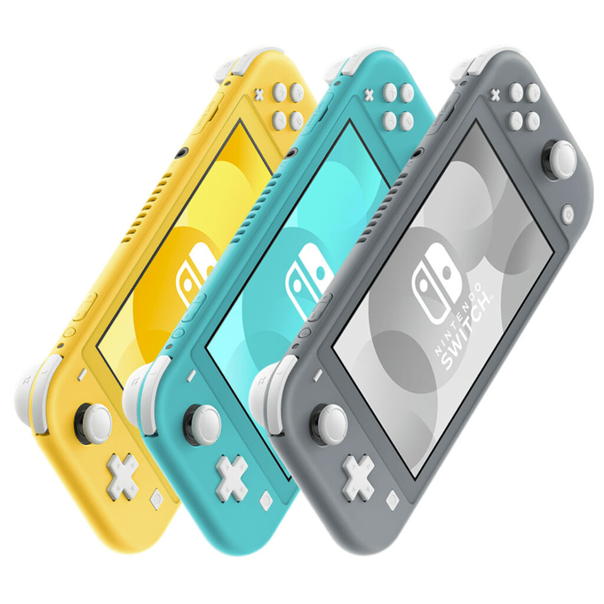
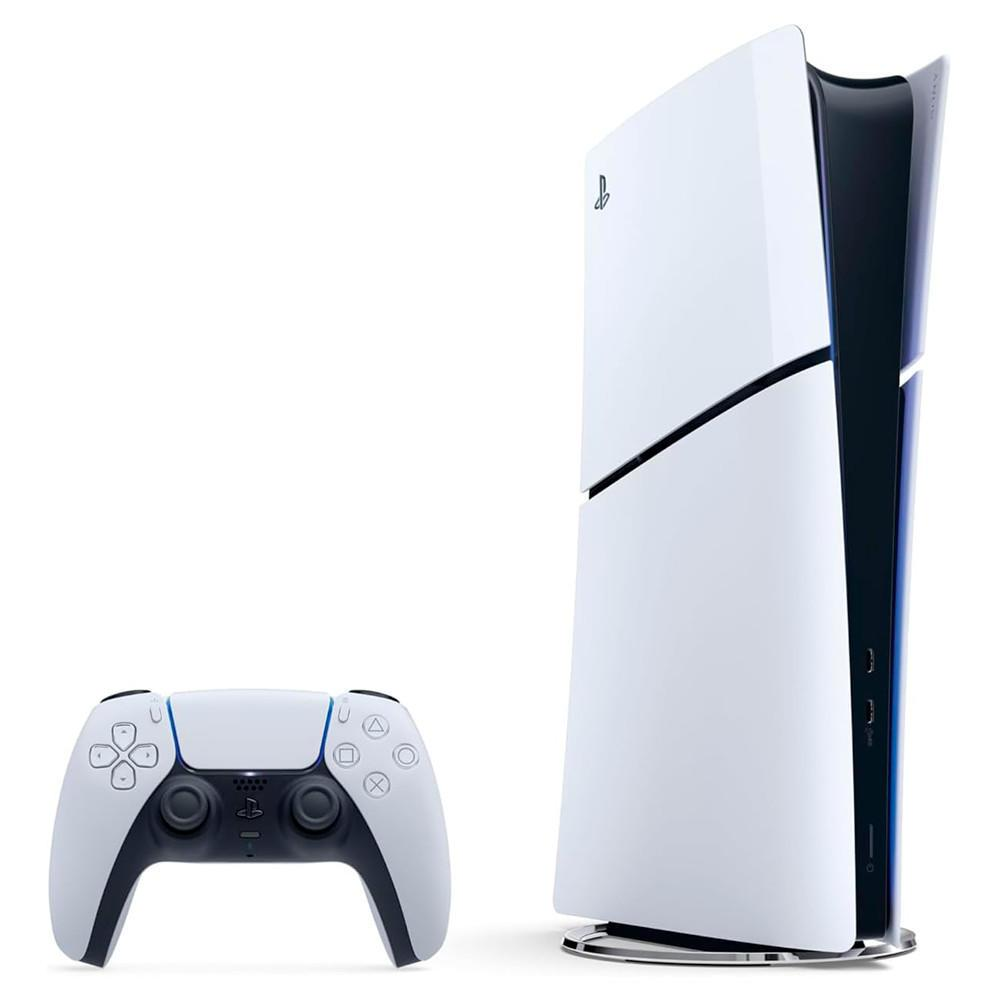

Console de jogo eletrônico (português brasileiro) ou consola de jogo eletrónico (português europeu) (também chamado no Brasil simplesmente de videogame ou console, e em Portugal de consola) é um microcomputador dedicado a executar jogos de vídeo (jogo eletrônico) de diversas naturezas ou, como são conhecidos, diversos gêneros, como jogos de tiro, jogos de ação, aventura e outros. O console executa um jogo de cada vez, mas que pode ser facilmente intercambiado de acordo com o desejo do usuário. Apreciadores de videojogos existem em ambos os sexos e todas as faixas etárias, de crianças a adultos.
História
O físico William Higinbotham, integrante da equipe do projeto Manhattan (produtores da primeira bomba atômica) é historicamente o inventor do videogame, em 1958 no laboratório de pesquisas nucleares estadunidense, mas este não patenteou o mesmo por achar um conceito muito elementar. Portanto oficialmente não é considerado seu criador.
William adaptou o programa de um osciloscópio que demonstrava a trajetória de uma bola em movimento onde os visitantes teriam de interagir com esta, sendo batizado de "Tenis para Dois" (ou Tennis Programming).
Em 1966, o engenheiro eletrônico alemão Ralph Baer, especialista em televisores e empregado da empresa Sanders Associates, pensou no conceito que implementasse novas funções para os televisores, criar um equipamento que processasse jogos eletrônicos por meio de sua veiculação na televisão, com poucos recursos financeiros. Mas a empresa teve um momento de crise e demissões em massa. Assim Ralph procurou novos investidores, então em agosto de 1972 fechou parceria com a empresa de eletrônicos Magnavox, que lança o primeiro aparelho de jogos elétricos doméstico (ou para televisores) da história, batizado de Odyssey, iniciando oficialmente a primeira geração de consoles (1972-1977).
Fabricantes atuais
Os modelos de consoles de videogames recebem popularmente a denominação de plataformas ou "sistemas", e cada modelo distinto será uma plataforma diferente.
Nintendo
A Nintendo, tradicional e inovadora, começou nos arcades (fliperamas) e estreou em 1983 com o console de mesa NES. Em sequência desenvolveu o SNES, o Nintendo 64, o GameCube, o Wii, o Wii U e por último o Nintendo Switch.

Nintendo Switch Lite
Sony
A Sony é líder do mercado de videojogos domésticos. Estreou em 1994 com o PlayStation, em 2000 lançou o console doméstico mais vendido da história, o PlayStation 2 e em 2006 lançou o PlayStation 3. Em 2005 lançou seu primeiro console portátil, o PSP, e no quarto trimestre de 2011 lançou o PlayStation Vita, continuação da sua linha de portáteis.

Playstation 5 Slim
Microsoft
A Microsoft é uma empresa multibilionária de software e hardware. Estreou-se no mercado dos consoles de videogame em 2001 com o Xbox. Em 2005 deu início a sétima geração com o Xbox 360, e em 2013 lançou o seu console da oitava geração: Xbox One, lançado no dia 22 de Novembro de 2013. Em 2020, lançou a linha de consoles de nona geração Xbox Series X/S.